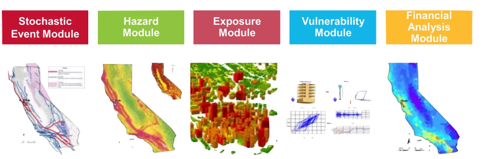

Catastrophe Models
What are catastrophe models?
The use of mathematical and statistical models to assess and predict the impact of man made and natural disasters used most commonly in specialized insurance and risk management fields.
What insights do they provide us with?
Catastrophe modeling allows insurers and reinsurers, financial institutions, corporations, and public agencies to evaluate and manage natural and man-made catastrophe risk from perils ranging from earthquakes and hurricanes to floods and wildfires.
Stress testing and scenario analysis are two complementary techniques that can help market risk managers to evaluate the impact of extreme or unlikely events on their portfolios or business models. Stress testing involves applying a specific shock or stress factor to one or more risk factors, and observing the resulting change in the value or income of the portfolio or business. Scenario analysis involves constructing a plausible but adverse scenario that combines multiple risk factors and events, and assessing the potential consequences for the portfolio or business. Both techniques can help to identify potential vulnerabilities, test the resilience and adequacy of capital and liquidity buffers, and inform risk mitigation and contingency plans
Price, Structure and Underwriting of Risk
- A more accurate financial understanding of expected losses which aids in policy pricing
- A better understanding of exposure which permits more specific policy creation
- Brokers can better understand clients exposure and are better placed to negotiate with underwriters
Assessments and Management of Capital
- A clearer idea of the capital reserves needed by an insurer
- A better understanding of the necessary reinsurance
Exposure Management
- An understanding of high risk aggregate areas for businesses and governments to inform preventative measures
- More informed decisions on effective response plans
What data is important in building catastrophe models?
In short, all relevant data is useful. However, perhaps the most important data is the data which relates to elements of the model which are not simulated, and hence represent the 'real world'. As such infrastructural data is key, which may include: local building regulations and laws, building materials etc
How do catastrophe models work?
Stochastic Event Module
The first stage of catastrophe modeling begins with the generation of a stochastic event set, which is a database of scenario events. Each event is defined by a specific strength or size, location or path, and probability of occurring or event rate. Thousands of possible event scenarios are simulated based on realistic parameters and historical data to probabilistically model what could happen over time.
Hazard Event Module
The hazard module assesses the level of physical hazard across a geographical area at risk. For example, an earthquake model estimates the level of ground motion across the region for each earthquake in the event set, considering the propagation of seismic energy. For hurricanes, a model calculates the strength of the winds around a storm, considering the region’s terrain and built environment.
Exposure and Vulnerability Module
The vulnerability module assesses the degree to which structures, their contents, and other insured properties are likely to be damaged by the hazard. Because of the inherent uncertainty in how buildings respond to hazards, damage is described as an average. The vulnerability module offers unique damage curves for different areas, accounting for local architectural styles and building codes.
Financial Module
The financial module translates the expected physical damage into monetary loss. It takes the damage to a building and its contents and estimates who is responsible for paying. The results of that determination are then interpreted by the model user and applied to business decisions.
See Moody's RMS Website for further details
What can complicate catastrophe models?
- Unique items, e.g. paintings, which don't have much comparable data and dont fit easily into other insurable groupings. In cases sucha as this, details such as their ability to be moved etc also become important in calculating the policy pricing.
- Events which are less well understood and current models and understandings make it difficult to identify how to model their risk. A current example of this is within the cyber insurance industries.
- Climate change... with increasing frequencies and severities of natural disasters, the geographic understandings upon which the simulations and models rely become less accurate.